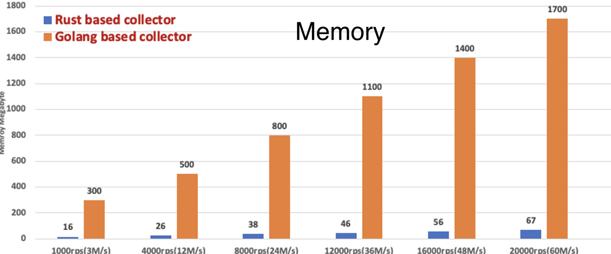

class: center, middle # Lessons: Porting a Streaming Pipeline from Scala to Rust ## 2023 Scale by the Bay .red[Evan Chan] .red[Principal Engineer - [Conviva](https://conviva.com)] http://velvia.github.io/presentations/2023-conviva-scala-to-rust --- # Conviva <img src="about-conviva.png" width="100%" style="float:center"> ??? Conviva does streaming, real-time, user experience analytics. We help our clients to instantly troubleshoot CDN and other user-facing issues, for example. --- # Massive Real-time Streaming Analytics - 5 trillion events processed per day - 800-2000GB/hour (not peak!!) - Started with custom Java code - went through Spark Streaming and Flink iterations - Most backend data components in production are written in Scala - Today: 420 pods running custom Akka Streams processors --- # Data World is Going Native and Rust * Going native: Python, end of Moore's Law, cloud compute * Safe, fast, and high-level abstractions * Functional data patterns - `map`, `fold`, pattern matching, etc. * Static dispatch and no allocations by default * PyO3 - Rust is the best way to write native Python extensions | JVM | Rust projects | | ------- | ---- | | Spark, Hive | [DataFusion](https://arrow.apache.org/blog/2019/02/04/datafusion-donation/), Ballista, [Amadeus](https://github.com/constellation-rs/amadeus) | | Flink | [Arroyo](https://github.com/ArroyoSystems/arroyo), [RisingWave](https://github.com/risingwavelabs/risingwave), Materialize | | Kafka/KSQL | [Fluvio](https://www.fluvio.io/docs/) | | ElasticSearch / Lucene | [Toshi](https://github.com/toshi-search/Toshi), MeiliDB | | Cassandra, HBase | [Skytable](https://github.com/skytable/skytable), Sled, Sanakirja... | | Neo4J | [TerminusDB](https://github.com/terminusdb/terminusdb), [IndraDB](https://github.com/indradb/indradb) | ??? Huge momentum for Rust projects. Many not even listed here... --- class: center, middle # About our Architecture <div class="mermaid"> graph LR; SAE(Streaming<br>Data<br>Pipeline) Sensors --> Gateways Gateways --> Kafka Kafka --> SAE SAE --> DB[(Metrics<br>Database)] DB --> Dashboards </div> --- # What We Are Porting to Rust <div class="mermaid"> graph LR; classDef highlighted fill:#99f,stroke:#333,stroke-width:4px SAE(Streaming<br>Data<br>Pipeline) Sensors:::highlighted --> Gateways:::highlighted Gateways --> Kafka Kafka --> SAE:::highlighted SAE --> DB[(Metrics<br>Database)] DB --> Dashboards </div> <div class="mermaid"> graph LR; Notes1(Sensors: consolidate<br>fragmented code base) Notes2(Gateway:<br>Improve on JVM and Go) Notes3(Pipeline:<br>Improve efficiency<br>New operator architecture) Notes1 ~~~ Notes2 Notes2 ~~~ Notes3 </div> --- # Our Journey to Rust <div class="mermaid"> gantt title From Hackathon to Multiple Teams dateFormat YYYY-MM axisFormat %y-%b section Data Pipeline Hackathon :Small Kafka ingestion project, 2022-11, 30d Scala prototype :2023-02, 6w Initial Rust Port : small team, 2023-04, 45d Bring on more people :2023-07, 8w 20-25 people 4 teams :2023-11, 1w section Gateway Go port :2023-07, 6w Rust port :2023-09, 4w </div> “I like that if it compiles, I know it will work, so it gives confidence.” --- # Promising Rust Hackathon <div class="mermaid"> graph LR; Kafka --> RustDeser(Rust Deserializer) RustDeser --> RA(Rust Actors - Lightweight Processing) </div> | Measurement | Improvement over Scala/Akka | | ----------- | ----- | | Throughput (CPU) | 2.6x more | | Memory used | 12x less | - Mostly I/O-bound lightweight deserialization and processing workload - Found out Actix does not work well with Tokio --- # Performance Results - Gateway <img src="gateway-rust-cpu.png" width="80%" style="float:center">  --- # Key Lessons or Questions What matters for a Rust port? | The 4 P's | ? | | --------- | ----- | | People | How do we bring developers onboard? | | Performance | How do I get performance? Data structures? Static dispatch? | | Patterns | What coding patterns port well from Scala? Async? | | Project | How do I build? Tooling, IDEs? | --- class: center, middle # People ## How do we bring developers onboard? --- # A Phased Rust Bringup We ported our main data pipeline in two phases: | Phase | Team | Rust Expertise | Work | | ---- | --------- | -------------- | ---- | | First | 3-5, very senior | 1-2 with significant Rust | Port core project components | | Second | 10-15, mixed, distributed | Most with zero Rust | Smaller, broken down tasks | - Have organized list of learning resources - 2-3 weeks to learn Rust and come up to speed --- # Overcoming Challenges .left-column[ Difficulties: - Lifetimes - Compiler errors - Porting previous patterns - Ownership and async - etc. ] .right-column[ How we helped: - Good docs - Start with tests - ChatGPT! - Rust Book - Office hours - Lots of detailed reviews - Split project into async and sync cores ] ??? RustDoc is really powerful, it has compiler checks for examples. Taking advantage of it is really important. Nothing beats a thoughtfully organized project. --- class: center, middle # Performance ## Data structures, static dispatch, etc. "I enjoy the fact that the default route is performant. It makes you write performant code, and if you go out the way, it becomes explicit (e.g., with `dyn`, `Boxed`, or `clone` etc). " --- # Porting from Scala: Huge Performance Win <div class="mermaid"> graph LR; classDef highlighted fill:#99f,stroke:#333,stroke-width:4px SAE(Streaming<br>Data<br>Pipeline) Sensors --> Gateways Gateways --> Kafka Kafka --> SAE:::highlighted SAE --> DB[(Metrics<br>Database)] DB --> Dashboards </div> - CPU-bound, programmable, heavy data processing - Neither Rust nor Scala is productionized nor optimized - Same architecture and same input/outputs - Scala version was not designed for speed, lots of objects - Rust: we chose static dispatch and minimizing allocations | Type of comparison | Improvement over Scala | | ---- | ---- | | Throughput, end to end | 22x | | Throughput, single-threaded microbenchmark | >= 40x | ??? With Rust, it was easier to make choices for speed, since Rust makes you have to decide explicitly either way. --- # Building a Flexible Data Pipeline <div class="mermaid"> graph LR; RawEvents(Raw Events) RawEvents -->| List of numbers | Extract1 RawEvents --> Extract2 Extract1 --> DoSomeMath Extract2 --> TransformSomeFields DoSomeMath --> Filter1 TransformSomeFields --> Filter1 Filter1 --> MoreProcessing </div> An interpreter passes time-ordered data between flexible DAG of operators. * Span1 - Start time: 1000 - End time: 1100 - Events: `["start", "click"]` * Span2 - Start time: 1100 - End time: 1300 - Events: `["ad_load"]` --- # Data Structures: Scala vs Rust .left-column[ Scala: Object Graph on Heap <div class="mermaid"> graph TB; classDef default font-size:24px ArraySpan["`Array[Span]`"] TL(Timeline - Seq) --> ArraySpan ArraySpan --> Span1["`Span(start, end, Payload)`"] ArraySpan --> Span2["`Span(start, end, Payload)`"] Span1 --> EventsAtSpanEnd("`Events(Seq[A])`") EventsAtSpanEnd --> ArrayEvent["`Array[A]`"] </div> ] .right-column[ Rust: mostly stack based / 0 alloc: <div class="mermaid"> flowchart TB; subgraph Timeline subgraph OutputSpans subgraph Span1 subgraph Events EvA ~~~ EvB end TimeInterval ~~~ Events end subgraph Span2 Time2 ~~~ Events2 end Span1 ~~~ Span2 end DataType ~~~ OutputSpans end </div> ] ??? Scala: Buffers use Arrays internally, which is separate obj. Each Span is a case class, that must be separate object. The Payload is yet another obj because of boxing/Any. Events are a list which internally probably uses an Array. Rust: Having structs avoids one layer of boxing. OutputSpans is SmallVec, inline for <= 2. Span is struct, inlined. Having enums also helps --- # Rust: Using Enums and Avoiding Boxing ```rust pub enum Timeline { EventNumber(OutputSpans<EventsAtEnd<f64>>), EventBoolean(OutputSpans<EventsAtEnd<bool>>), EventString(OutputSpans<EventsAtEnd<DataString>>), } type OutputSpans<V> = SmallVec<[Spans<V>; 2]>; pub struct Span<SV: SpanValue> { pub time: TimeInterval, pub value: SV, } pub struct EventsAtEnd<V>(SmallVec<[V; 1]>); ``` In the above, the `Timeline` enum can fit entirely in the stack and avoid all boxing and allocations, if: - The number of spans is very small, below limit set in code - The number of events in each span is very small (1 in this case, which is the common case) - The base type is a primitive, or a string which is below a certain length ??? It's important in Rust to think about data structure design early on, especially with respect to ownership and lifetimes. --- # Avoiding Allocations using SmallVec and SmallString [SmallVec](https://docs.rs/smallvec/latest/smallvec/) is something like this: ```rust pub enum SmallVec<T, const N: usize> { Stack([T; N]), Heap(Vec<T>), } ``` The enum can hold up to N items inline in an array with no allocations, but switches to the Heap variant if the number of items exceeds N. There are various crates for small strings and other data structures. ??? const N usize is a generic const type parameter syntax for arrays --- # Static vs Dynamic Dispatch Often one will need to work with many different structs that implement a `Trait` -- for us, different operator implementations supporting different types. Static dispatch and inlined code is much faster. 1. Monomorphisation using generics * `fn execute_op<O: Operator>(op: O) -> Result<...>` * Compiler creates a new instance of `execute_op` for every different O * Only works when you know in advance what Operator to pass in 2. Use Enums and enum_dispatch * `fn execute_op(op: OperatorEnum) -> Result<...>` 3. Dynamic dispatch * `fn execute_op(op: Box<dyn Operator>) -> Result<...>` * `fn execute_op(op: &dyn Operator) -> Result<...>` (avoids allocation) 4. Function wrapping * Embedding functions in a generic struct --- # enum_dispatch Suppose you have ```rust trait KnobControl { fn set_position(&mut self, value: f64); fn get_value(&self) -> f64; } struct LinearKnob { position: f64, } struct LogarithmicKnob { position: f64, } impl KnobControl for LinearKnob... ``` [enum_dispatch](https://docs.rs/enum_dispatch/latest/enum_dispatch/) lets you do this: ```rust #[enum_dispatch] trait KnobControl { //... } #[enum_dispatch(KnobControl)] enum Knob { LinearKnob, LogarithmicKnob, } ``` ??? enum_dispatch generates a pattern match which dispatches the call to its variants. This is still much more efficient compared with dynamic dispatch, because of avoiding vtable lookup and a dynamic jump, instead the code can possibly be inlined. --- # Function wrapping Static function wrapping - no generics ```rust pub struct OperatorWrapper { name: String, func: fn(input: &Data) -> Data, } ``` Need a generic - but accepts closures ```rust pub struct OperatorWrapper<F> where F: Fn(input: &Data) -> Data { name: String, func: F, } ``` --- class: center, middle # Patterns ## Async, Type Classes, etc. --- # Rust Async: Different Paradigms "Async: It is well designed... Yes, it is still pretty complicated piece of code, but the logic or the framework is easier to grasp compared to other languages." Having to use `Arc`: Data Structures are not Thread-safe by default! | Scala | Rust | | ----- | ---- | | Futures | futures, async functions | | ?? | async-await | | Actors(Akka) | Actix, Bastion, etc. | | Async streams | Tokio streams | | Reactive (Akka streams, Monix, ZIO)| reactive_rs, rxRust, etc. | ??? Tokio is, by the way, Rust's dominant async library There isn't anything quite like async await in Scala, it is really nice in that it makes async seem like regular method calls. --- # Replacing Akka: Actors in Rust - [Actix](https://actix.rs) threading model doesn't mix well with Tokio - We moved to [tiny-tokio-actor](https://github.com/fdeantoni/tiny-tokio-actor), then wrote our own ```rust pub struct AnomalyActor {} #[async_trait] impl ChannelActor<Anomaly, AnomalyActorError> for AnomalyActor { async fn handle( &mut self, msg: Anomaly, ctx: &mut ActorContext<Anomaly>, ) -> Result<(), Report<AnomalyActorError>> { use Anomaly::*; match msg { QuantityOverflowAnomaly { ctx: _, ts: _, qual: _, qty: _, cnt: _, data: _, } => {} PoisonPill => { ctx.stop(); } } Ok(()) } } ``` --- # Other Patterns to Learn | Old Pattern | New Pattern | | ----------- | ----------- | | No inheritance | Use composition!<br>- Compose data structures<br>- Compose small Traits | | No exceptions | Use `Result` and `?` | | Data structures are not Thread safe | Learn to use `Arc` etc. | | Returning Iterators | Don't return things that borrow other things. This makes life difficult. | --- # Type Classes In Rust, type classes (Traits) are smaller and more compositional. ```rust pub trait Inhale { fn sniff(&self); } ``` You can implement new Traits for existing types, and have different impl's for different types. ```rust impl Inhale for String { fn sniff(&self) { println!("I sniffed {}", self); } } // Only implemented for specific N subtypes of MyStruct impl<N: Numeric> Inhale for MyStruct<N> { fn sniff(&self) { .... } } ``` --- class: center, middle # Project ## Build, IDE, Tooling --- # "Cargo is the best build tool ever" - Almost no dependency conflicts due to multiple dep versioning - Configuration by convention - common directory/file layouts for example - Really simple .toml - no need for XML, functional Scala, etc. - Rarely need code to build anything, even for large projects ```toml [package] name = "telemetry-subscribers" version = "0.3.0" license = "Apache-2.0" description = "Library for common telemetry and observability functionality" [dependencies] console-subscriber = { version = "0.1.6", optional = true } crossterm = "0.25.0" once_cell = "1.13.0" opentelemetry = { version = "0.18.0", features = ["rt-tokio"], optional = true } ``` ??? Rant here, hope nobody gets offended. Why do I have to write code to build something? When it's late at night and I just want to test something, I don't want to have to think about whether I need to map or flatmap some value and what 5 layers of config I need to change to get something to build correctly. --- # IDEs, CI, and Tooling | | | | ---- | ---- | | IDEs/Editors | VSCode, RustRover (IntelliJ),<br>vim/emacs/etc with Rust Analyzer | | Code Coverage | VSCode inline, grcov/lcov, Tarpaulin (Linux only) | | Slow build times | Caching: [cargo-chef](https://github.com/LukeMathWalker/cargo-chef), rust-cache | | Slow test times | cargo-nextest | | Property Testing | proptest | | Benchmarking | Criterion | https://blog.logrocket.com/optimizing-ci-cd-pipelines-rust-projects/ VSCode's "LiveShare" feature for distributed pair programming is TOP NOTCH. --- # Rust Resources and Projects https://github.com/velvia/links/blob/main/rust.md - this is my list of Rust projects and learning resources https://github.com/rust-unofficial/awesome-rust https://www.arewelearningyet.com - ML focused --- # What do we miss from Scala? - More mature libraries - in some cases: HDFS, etc. - Good streaming libraries - like Monix, Akka Streams etc. - I guess all of Akka - "Less misleading compiler messages" - Rust error messages read better from the CLI, IMO (not an IDE) --- # Takeaways - It's a long journey but Rust is worth it. - Structuring a project for successful onramp is really important - Think about data structure design early on - Allow plenty of time to ramp up on Rust patterns, tools We are hiring across multiple roles/levels! --- # Thank You Very Much! .left-column[ * https://velvia.github.io/about * https://github.com/velvia * [@evanfchan](https://twitter.com/Evanfchan) * [IG: @platypus.arts](http://instagram.com/platypus.arts) ] .right-column[ ] --- Extra slides --- # Data World is Going Native (from JVM) * The rise of Python and Data Science * Led to AnyScale, Dask, and many other Python-oriented data frameworks * Rise of newer, developer-friendly native languages (Go, Swift, Rust, etc.) * Migration from Hadoop/HDFS to more cloud-based data architectures * Apache Arrow and other data interchange formats * Hardware architecture trends - end of Moore's Law, rise of GPUs etc --- # Why We Went with our Own Actors 1. Initial Hackathon prototype used [Actix](https://actix.rs) - Actix has its own event-loop / threading model, using [Arbiters](https://actix.rs/docs/actix/arbiter/) - Difficult to co-exist with Tokio and configure both 2. Moved to [tiny-tokio-actor](https://github.com/fdeantoni/tiny-tokio-actor) - Really thin layer on top of Tokio - 25% improvement over rdkafka + Tokio + Actix 3. Ultimately wrote our own, 100-line mini Actor framework - tiny-tokio-actor required messages to be `Clone` so we could not, for example, send `OneShot` channels for other actors to reply - Wanted `ActorRef<MessageType>` instead of `ActorRef<ActorType, MessageType>` - supports `tell()` and `ask()` semantics --- # Scala: Object Graphs and Any ```scala class Timeline extends BufferedIterator[Span[Payload]] final case class Span[+A](start: Timestamp, end: Timestamp, payload: A) { def mapPayload[B](f: A => B): Span[B] = copy(payload = f(payload)) } type Event[+A] = Span[EventsAtSpanEnd[A]] @newtype final case class EventsAtSpanEnd[+A](events: Iterable[A]) ``` - `BufferedIterator` must be on the heap - Each `Span` `Payload` is also boxed and on the heap, even for numbers - To be dynamically interpretable, we need `BufferedIterator[Span[Any]]` in many places :( - Yes, specialization is possible, at the cost of complexity